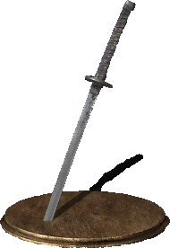

A Uchigatana é uma katana leve e extremamente afiada, famosa por sua capacidade de causar sangramento nos inimigos. Seu estilo favorece ataques rápidos e precisos, recompensando jogadores que dominam o timing e o gerenciamento de estamina.
A Uchigatana pode ser obtida logo no início do jogo ao derrotar o Mestre da Espada (Sword Master), um inimigo opcional localizado próximo ao Firelink Shrine.
Para encontrá-lo, saia do santuário e siga pelo caminho à esquerda, perto do penhasco. O inimigo utiliza uma katana semelhante e possui ataques rápidos e agressivos.
Jogadores iniciantes podem enfrentá-lo após subir alguns níveis ou utilizar o ambiente a seu favor para facilitar o combate.